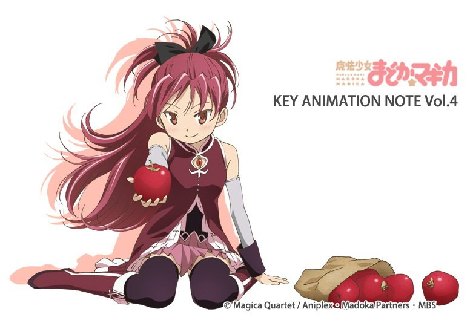
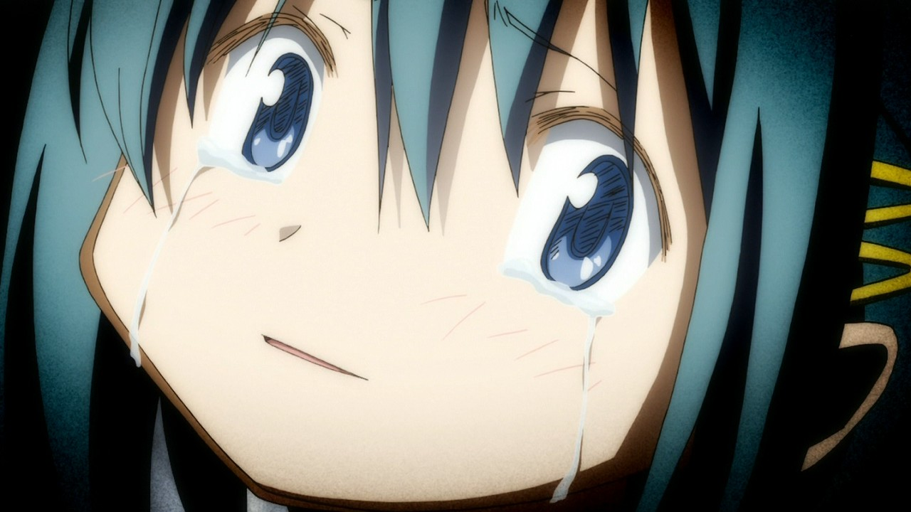
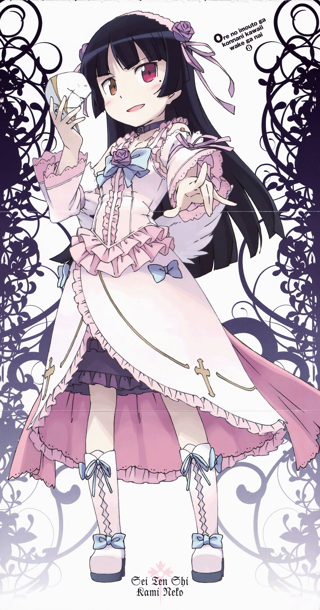

佐仓杏子
11/6(水)
佐仓杏子
11/15(金)

佐倉杏子 / 佐仓杏子
＠剧场版 魔法少女☆小圆
（CV：野中藍）
11/20(水)

鹿目圆
11/23(土)

鹿目まどか / 鹿目圆
＠剧场版 魔法少女☆小圆
（CV：悠木碧）
11/21(木)

美樹さやか / 美树沙耶香
＠剧场版 魔法少女☆小圆
（CV：喜多村英梨）
11/17(日)

わたし / 人类小姐
＠人类衰退之后
（CV：中原麻衣）
11/10(日)

歳納京子 / 岁纳京子
＠摇曳百合♪♪
（CV：大坪由佳）

湊智花
＠萝球部!
（CV：花澤香菜）
慧心学园小学部6年C班的学生。女子篮球社中唯一曾有打篮球经验的人，而且技术高超，跳投的姿势非常优美，对篮球的求胜心强，也因此没什么朋友，之后因为真帆的关系，发现篮球除了胜负以外的乐趣，因为如此，凑智花积极的想保住现在这可以开心打球的篮球社。对昴有好感。

沖田紗羽 / 冲田沙羽
＠TARI TARI
（CV：早見沙織）
和奏的同班同学，弓箭部所属的少女。住在高中附近寺庙。对待寺庙里养着的马跟亲人一般，梦想着自己将来能做一位骑师。如今已加入了由宫本来夏组织的合唱部，唱功非常好。
岁纳京子
羽瀬川小鳩
＠我的朋友很少NEXT
（CV：花澤香菜）
男主角羽濑川小鹰的妹妹，金发碧眼、皮肤白皙的美少女。言行受到中二病很大的影响，属于中二病的邪气眼系。平常做歌特萝莉打扮，右眼戴着红色隐形眼镜，自称血族真祖，称小鹰为“吾之眷属”。
11/7(木)

筒隠月子
＠变态王子和不笑猫。
（CV：小倉唯）
11/11(月)

人类小姐

人类小姐

筒隠月子

小豆梓
＠变态王子和不笑猫。
（CV：石原夏織）
新垣あやせ / 新垣绫濑
＠我的妹妹不可能这么可爱。
（CV：早見沙織）
11/8(金)

鹿目圆
11/16(土)

鹿目圆
11/18(月)

美树沙耶香
11/12(火)

巴マミ / 巴麻美
＠剧场版 魔法少女☆小圆
（CV：水橋かおり / 水桥香织）
巴麻美

鹿目圆
西住みほ / 西住美穗
＠少女和战车
（CV：渕上舞 / 渊上舞）

黑猫
11/9(土)

黒猫（五更瑠璃）
＠我的妹妹不可能这么可爱。
（CV：花澤香菜）
11/13(水)
美树沙耶香
美树沙耶香

赤座あかり / 赤座灯里
＠摇曳百合♪♪
（CV：三上枝織）
四糸乃
＠约会・大・作战
（CV：野水伊織）